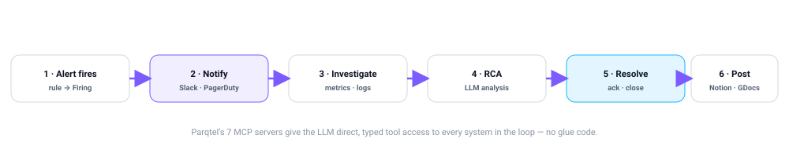

MCP Servers
Parqtel ships seven Model Context Protocol servers. One is fully functional and lets an LLM agent query Parqtel directly. The other six are scaffolded but not yet wired to their providers.
Current status, stated plainly. Across the workspace there are 30 registered tools, of which 7 have live executors — all 7 in parqtel-mcp-parqtel. The Slack, PagerDuty, Jira, Notion, Discord and Google Docs servers register tool metadata only: the tools appear in tools/list with correct schemas, but calling one returns the echo contract instead of performing the action. Their declared provider credentials are read by zero lines of Rust, so setting SLACK_BOT_TOKEN and friends currently has no effect. Treat them as declared interfaces awaiting implementation, not as working integrations.

Server inventory
| Server | Port | Tools | Status |
|---|---|---|---|
parqtel-mcp-parqtel | 3007 | 7 | Live. Queries Parqtel over its HTTP API. |
parqtel-mcp-slack | 3001 | 4 | Metadata only |
parqtel-mcp-pagerduty | 3002 | 5 | Metadata only |
parqtel-mcp-jira | 3003 | 4 | Metadata only |
parqtel-mcp-notion | 3004 | 4 | Metadata only |
parqtel-mcp-discord | 3005 | 3 | Metadata only |
parqtel-mcp-gdocs | 3006 | 3 | Metadata only |
parqtel-mcp-parqtel LIVE
The functional server. It talks to a running Parqtel instance over its HTTP API and exposes read-oriented observability tools to an LLM agent.
export PARQTEL_API_URL="http://127.0.0.1:8080"
parqtel-mcp-parqtel| Tool | Returns |
|---|---|
query_metrics | ParQL metric query results with time range and step |
query_metrics_labels | Label names and values, with an optional metric filter |
query_logs | ParqtelQL log search with time range and limit |
ingest_rates | Current and historical ingest rates per signal |
get_alert_history | Alert instances and their transition history |
get_topology | Observed service topology derived from resource attributes |
get_noise_statistics | Alert noise scores and suppression decisions |
curl -X POST http://localhost:3007/mcp \
-H "Content-Type: application/json" \
-H "Accept: application/json, text/event-stream" \
-d '{"jsonrpc":"2.0","id":1,"method":"tools/list"}'
curl -X POST http://localhost:3007/mcp \
-H "Content-Type: application/json" \
-H "Accept: application/json, text/event-stream" \
-d '{"jsonrpc":"2.0","id":2,"method":"tools/call","params":{
"name":"query_metrics",
"arguments":{"query":"sum by (service) (rate(http_requests_total[5m]))",
"start":"2026-10-06T09:00:00Z","end":"2026-10-06T10:00:00Z","step":"60"}}}'Integration servers (metadata only)
These declare the intended tool surface. Schemas are complete and discovery works; execution is not implemented.
slack: send_alert_message · send_rca_update · resolve_notification · create_incident_channel
pagerduty: create_incident · add_note · resolve_incident · get_oncall · get_recent_incidents
jira: create_incident_issue · add_rca_comment · create_action_item · transition_issue
notion: create_incident_page · update_incident_status · append_rca_section · create_postmortem_page
discord: send_alert_embed · send_rca_update · resolve_alert
gdocs: create_postmortem_doc · append_timeline · share_documentCredentials the chart and Compose file expect — SLACK_BOT_TOKEN, PAGERDUTY_API_KEY, JIRA_API_TOKEN, NOTION_API_KEY, DISCORD_BOT_TOKEN — are declared in deployment manifests but currently read by no code path.
The Helm chart declares mcp.<name>.secretName, but the templates render referenced secrets as plaintext literal environment variables — never via secretKeyRef. Do not use this path with real production credentials until that is fixed, even once the executors land.
Transport
Streamable HTTP only, per MCP specification version 2025-06-18. There is no stdio transport anywhere in the workspace.
| Method | Route | Status |
|---|---|---|
| POST | /mcp | JSON-RPC over Streamable HTTP |
| GET | /mcp | Server-to-client event stream |
| DELETE | /mcp | Terminate the session |
| GET | /tools/list | Deprecated alias |
| POST | /tools/call | Deprecated alias |
| GET | /health | Liveness only — no readiness endpoint |
MCP servers mount no middleware at all — no CORS, no auth, no TLS — and expose /health but no /ready. The chart's readiness probe was deliberately pointed away from them.
Protocol-version header disagreement. When a client sends no version, the JSON body falls back to 2025-06-18 but the MCP-Protocol-Version header falls back to 2024-11-05 — so the client sees two different versions in one exchange. Send an explicit version header. serverInfo.name is parqtel-mcp for all seven servers, so it does not identify which one answered.
Configuration
| Variable | Description | Default |
|---|---|---|
MCP_HOST | Bind address | 0.0.0.0 |
MCP_PORT | Listen port | 3000 |
MCP_RATE_LIMIT | Requests per minute per client | 60 |
PARQTEL_API_URL | Parqtel base URL — parqtel server only | http://127.0.0.1:8080 |
Tool registry and rate limiting
The registry is a plain struct, not a trait: a vector of McpTool metadata plus a HashMap<String, ToolHandler> of executors. Discovery is a linear scan performed twice per request; dispatch is a hash lookup. There is no middleware layer and no per-tool policy.
The token bucket is keyed per client_id, defaults to 60 requests per minute, refills on a millisecond clock and starts full — so an immediate full burst is always permitted. Two caveats:
- The limit is global, not per-tool, so one chatty tool starves the others.
client_idcomes from an unauthenticated request field, making the limit trivially bypassed — and the client-id map grows without bound.
The two routes also disagree on throttling: POST /mcp returns 500 with JSON-RPC code -32000, while the deprecated POST /tools/call returns 429 with no Retry-After.
Credential redaction
Before tool arguments reach the audit log, they pass through a sanitiser that replaces the value of any key whose lowercased name contains one of:
token · api_key · password · secret · authorization
· auth · session · cookie · privateThe replacement is "***REDACTED***". The sanitiser dispatches on value shape and recurses through objects and arrays element-wise — a fix for a regression where an array of objects such as [{"token": "…"}] was logged verbatim, because the old implementation recursed into objects but returned non-objects unchanged. Covered by a regression test (sanitize_params_redacts_secrets_nested_in_arrays).
Four properties worth knowing before relying on it:
- Arguments only. Tool results are never redacted.
- Audit log only. This is not an input filter — it does not change what is sent anywhere; it only changes what is written down.
- Unbounded nesting depth. There is no recursion cap.
- Substring matching over-triggers. Because it matches anywhere in the key, innocuous fields named
routing_key,keywords,authororoauthare redacted too.
This is the only call site, and it affects MCP tools/call on all seven servers. No Parqtel HTTP endpoint is affected. Note also that it does not run "before forwarding to external APIs", as earlier documentation claimed — there is no forwarding step today.
Security posture
MCP servers have no authentication of any kind and bind 0.0.0.0 by default. parqtel-mcp-parqtel is read-only against Parqtel's HTTP API — which is itself unauthenticated. Put these behind an authenticated boundary before exposing them; do not rely on the rate limiter for access control.
Deploying
# Docker Compose — MCP services are commented out by default.
# Add tokens to .env and uncomment the services you need.
docker compose up -d parqtel-mcp-parqtel
# Helm — each server is its own deployment.
helm install parqtel charts/parqtel -f charts/parqtel/ci/full-values.yaml \
--set mcp.parqtel.enabled=trueRelated: API reference · No authentication · Kubernetes deployment